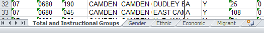
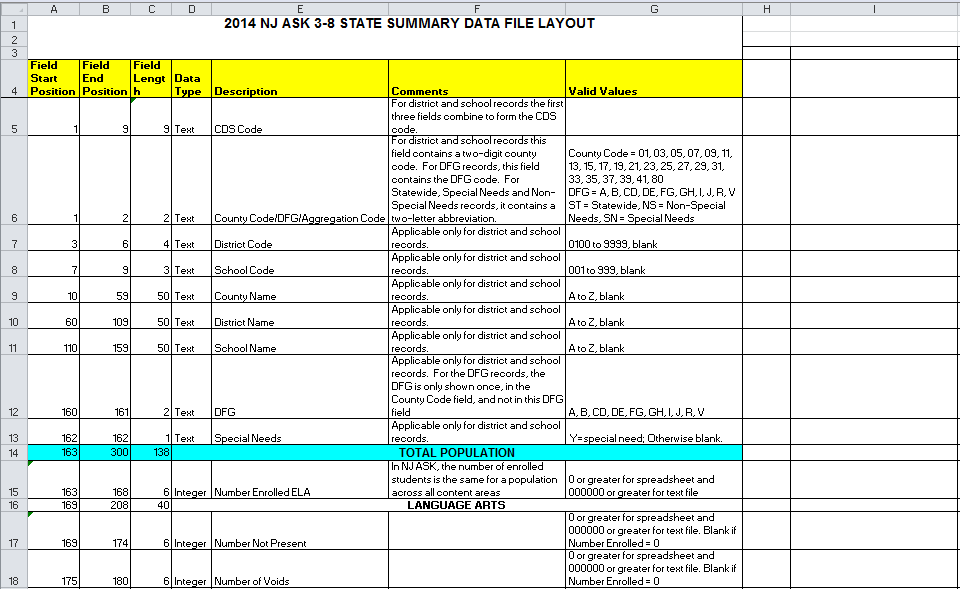

New Jersey has switched over to the PARCC assessment, but from roughly 2005-2014 New Jersey took the "New Jersey Assessment of Skills and Knowledge," or more simply "the NJASK."
This data is a bit of a pain to work with. There's a page for each year of assessment data, and for each year there's a page per grade level. But wait! It gets better! If you download the Excel spreadsheet for each grade level (helpfully titled state_summary.xls for every year and grade!), you'll find 5 tabs per file, because there are simply too many demographic/subject subgroups for Excel 2003 to handle.

I would like to say that I never go down this road, but looking at my downloads folder, I'm apparently on state_summary(15).xls.
Yuck.
there must be a better way
Fortunately the state publishes fixed width versions of these files that you can work with. They're a little intimidating at first, but they're actually (relatively) easy to read into R.
welcome to the Hadleyverse
We can use the read_fwf() function from hadley/readr to quickly read fixed width files into R.
First let's load some libraries:
library(readr)
library(dplyr)
library(sqldf)
library(reshape2)
library(magrittr)
We can pass one of those fixed-width data file to read_fwf, and it will try to convert it into an R data frame:
sample_file = "http://www.state.nj.us/education/schools/achievement/14/njask8/state_summary.txt"
njask14_gr8 <- readr::read_fwf(
file = sample_file,
col_positions = readr::fwf_empty(file=sample_file)
)
as.data.frame(njask14_gr8)[1:11,1:15]
## X1 X2 X3 X4 X5
## 1 ST <NA> <NA> <NA> 104616
## 2 NS <NA> <NA> <NA> 85260
## 3 SN <NA> <NA> <NA> 19356
## 4 A <NA> <NA> <NA> 16599
## 5 250100 MONMOUTH ASBURY PARK <NA> A Y 129
## 6 250100070MONMOUTH ASBURY PARK ASBURY PARK MIDDLE SCHOOL A Y 128
## 7 250100100MONMOUTH ASBURY PARK THURGOOD MARSHALL PRIMARY A Y* *
## 8 010110 ATLANTIC ATLANTIC CITY <NA> A 462
## 9 010110300ATLANTIC ATLANTIC CITY BRIGHTON AVENUE SCHOOL A * *
## 10 010110050ATLANTIC ATLANTIC CITY CHELSEA HEIGHTS A 26
## 11 010110140ATLANTIC ATLANTIC CITY DR M L KING JR SCH COMP A 47
## X6 X7 X8 X9 X10
## 1 308 473 877102958 202 672 1262201104616 396 292
## 2 218 343 683 84016 151 701 1482239 85260 259 237
## 3 90 130 194 18942 428 546 272036 19356 137 55
## 4 77 99 173 16250 442 535 242028 16599 123 52
## 5 1 2 0 126 667 333 001885 129 2 0
## 6 1 2 0 125 664 336 001888 128 2 0
## 7 * * * * * * * * * * *
## 8 3 5 0 454 379 599 222065 462 4 3
## 9 * * * * * * * * * * *
## 10 0 0 0 26 38 923 382247 26 0 0
## 11 0 3 0 44 318 659 232047 47 0 3
## X11 X12 X13 X14
## 1 894103034 285 359 3562252104616 518 285 797103016 210 518 2712256 84718
## 2 696 84068 230 369 4012316 85260 348 239 610 84063 154 530 3162307 70367
## 3 198 18966 530 314 1561973 19356 170 46 187 18953 459 469 722030 14351
## 4 175 16249 533 312 1551970 16599 151 44 164 16240 467 465 682024 12279
## 5 0 127 835 134 311665 129 3 0 0 126 627 365 081901 81
## 6 0 126 833 135 321667 128 3 0 0 125 624 368 081906 81
## 7 * * * * * * * * * * * * * * 0
## 8 0 455 451 356 1932064 462 2 2 0 458 450 483 682046 373
## 9 * * * * * * * * * * * * * * 0
## 10 0 26 269 423 3082247 26 0 0 0 26 115 577 3082338 20
## 11 0 44 386 432 1822065 47 0 2 0 45 511 422 672013 39
## X15
## 1 185
## 2 133
## 3 52
## 4 42
## 5 1
## 6 1
## 7 <NA>
## 8 3
## 9 <NA>
## 10 0
## 11 0
That's just the first fifteen of 244 columns -- we got some data into R (good), but those column names are awful unhelpful. Also, there's a bunch of weird * characters in our data. How can we identify each column?
this part is unfortunate
For whatever reason NJ has seen fit to publish the crucial definitions (column headers) for that data in an Excel spreadsheet. Never in my life have I seen something more clearly suited for JSON.

I think we can do some dplyr tricks and recover the nested aspects of this data. First, read the excel file in as a data frame:
layout <- readr::read_csv("datasets/njask_layout.csv")
names(layout) <- tolower(gsub(' ', '_', names(layout)))
head(layout)
## Source: local data frame [6 x 8]
##
## field_start_position field_end_position field_length data_type
## (int) (int) (int) (chr)
## 1 1 9 9 Text
## 2 1 2 2 Text
## 3 3 6 4 Text
## 4 7 9 3 Text
## 5 10 59 50 Text
## 6 60 109 50 Text
## Variables not shown: description (chr), comments (chr), valid_values
## (chr), structural (lgl).
I did a little pre-processing in Excel before saving that csv -- namely, I created an indicator variable that indicates if a row was a 'spanning' row (basically, did the value span multiple columns?). The strategy here is going to be:
1) Separate those 'spanners' (which contain info, but aren't unique data elements) from the 'keepers' (the rows that uniquely ID each column).
2) Join our keepers back to our spanners, exploting the data about field start position and end position.
spanners <- dplyr::filter(layout, structural==TRUE)
keepers <- dplyr::filter(layout, structural==FALSE)
head(spanners)
## Source: local data frame [6 x 8]
##
## field_start_position field_end_position field_length data_type
## (int) (int) (int) (chr)
## 1 163 300 138 TOTAL POPULATION
## 2 169 208 40 LANGUAGE ARTS
## 3 209 254 46 MATHEMATICS
## 4 255 300 46 SCIENCE
## 5 301 438 138 GENERAL EDUCATION
## 6 307 346 40 LANGUAGE ARTS
## Variables not shown: description (chr), comments (chr), valid_values
## (chr), structural (lgl).
To match spanners with keepers, we can do a SQL join (dplyr doesn't join on inequalities yet).
with_spanners <- sqldf('
SELECT keepers.*
,spanners.data_type AS spanner
,spanners.field_length AS spanner_length
FROM keepers
LEFT OUTER JOIN spanners
ON keepers.field_start_position >= spanners.field_start_position
AND keepers.field_end_position <= spanners.field_end_position
')
## Loading required package: tcltk
with_spanners[1:20, c(1:5,8:10)]
## field_start_position field_end_position field_length data_type
## 1 1 9 9 Text
## 2 1 2 2 Text
## 3 3 6 4 Text
## 4 7 9 3 Text
## 5 10 59 50 Text
## 6 60 109 50 Text
## 7 110 159 50 Text
## 8 160 161 2 Text
## 9 162 162 1 Text
## 10 163 168 6 Integer
## 11 169 174 6 Integer
## 12 169 174 6 Integer
## 13 175 180 6 Integer
## 14 175 180 6 Integer
## 15 181 186 6 Integer
## 16 181 186 6 Integer
## 17 187 192 6 Integer
## 18 187 192 6 Integer
## 19 193 196 4 Decimal
## 20 193 196 4 Decimal
## description structural spanner
## 1 CDS Code FALSE <NA>
## 2 County Code/DFG/Aggregation Code FALSE <NA>
## 3 District Code FALSE <NA>
## 4 School Code FALSE <NA>
## 5 County Name FALSE <NA>
## 6 District Name FALSE <NA>
## 7 School Name FALSE <NA>
## 8 DFG FALSE <NA>
## 9 Special Needs FALSE <NA>
## 10 Number Enrolled ELA FALSE TOTAL POPULATION
## 11 Number Not Present FALSE TOTAL POPULATION
## 12 Number Not Present FALSE LANGUAGE ARTS
## 13 Number of Voids FALSE TOTAL POPULATION
## 14 Number of Voids FALSE LANGUAGE ARTS
## 15 Number APA FALSE TOTAL POPULATION
## 16 Number APA FALSE LANGUAGE ARTS
## 17 Number of Valid Scale Scores FALSE TOTAL POPULATION
## 18 Number of Valid Scale Scores FALSE LANGUAGE ARTS
## 19 Partially Proficient Percentage FALSE TOTAL POPULATION
## 20 Partially Proficient Percentage FALSE LANGUAGE ARTS
## spanner_length
## 1 NA
## 2 NA
## 3 NA
## 4 NA
## 5 NA
## 6 NA
## 7 NA
## 8 NA
## 9 NA
## 10 138
## 11 138
## 12 40
## 13 138
## 14 40
## 15 138
## 16 40
## 17 138
## 18 40
## 19 138
## 20 40
So we have fields matched with their parents, but the sql join leaves us with long data, and we really need wide data (one row per field). Let's reshape!
First let's tag each row with a row number. For cases where we have multiple matching spanners(TOTAL POPULATION and LANGUAGE ARTS, for instance), this will let us collapse those rows into one record, with a column for description, spanner1, and spanner2.
with_rn <- with_spanners %>%
dplyr::group_by(
field_start_position, field_end_position, field_length,
data_type, description, comments, valid_values
) %>%
mutate(
rn = order(desc(spanner_length))
) %>%
select(
field_start_position, field_end_position, field_length,
data_type, description, comments, valid_values, spanner, rn
) %>%
as.data.frame()
with_rn$rn <- paste0('spanner', with_rn$rn)
#mask NAS
with_rn$spanner <- ifelse(is.na(with_rn$spanner),'', with_rn$spanner)
head(with_rn)
## field_start_position field_end_position field_length data_type
## 1 1 9 9 Text
## 2 1 2 2 Text
## 3 3 6 4 Text
## 4 7 9 3 Text
## 5 10 59 50 Text
## 6 60 109 50 Text
## description
## 1 CDS Code
## 2 County Code/DFG/Aggregation Code
## 3 District Code
## 4 School Code
## 5 County Name
## 6 District Name
## comments
## 1 For district and school records the first three fields combine to form the CDS code.
## 2 For district and school records this field contains a two-digit county code. For DFG records, this field contains the DFG code. For Statewide, Special Needs and Non-Special Needs records, it contains a two-letter abbreviation.
## 3 Applicable only for district and school records.
## 4 Applicable only for district and school records.
## 5 Applicable only for district and school records.
## 6 Applicable only for district and school records.
## valid_values
## 1 <NA>
## 2 County Code = 01, 03, 05, 07, 09, 11, 13, 15, 17, 19, 21, 23, 25, 27, 29, 31, 33, 35, 37, 39, 41, 80\nDFG = A, B, CD, DE, FG, GH, I, J, R, V\nST = Statewide, NS = Non-Special Needs, SN = Special Needs
## 3 0100 to 9999, blank
## 4 001 to 999, blank
## 5 A to Z, blank
## 6 A to Z, blank
## spanner rn
## 1 spanner1
## 2 spanner1
## 3 spanner1
## 4 spanner1
## 5 spanner1
## 6 spanner1
We'll pass the row number we just generated as an identifier to one of the many functions in the reshape2 toolbox (TBH I don't know any of those by heart - I just look up the syntax when needed).
layout_njask <- dcast(
data = with_rn,
formula = field_start_position + field_end_position + field_length +
data_type + description + comments + valid_values ~ rn,
value.var = "spanner"
)
#this appears to be a bug in dcast? should not be needed.
layout_njask$spanner2 <- ifelse(is.na(layout_njask$spanner2),'', layout_njask$spanner2)
layout_njask[1:20, ]
## field_start_position field_end_position field_length data_type
## 1 1 9 9 Text
## 2 1 2 2 Text
## 3 3 6 4 Text
## 4 7 9 3 Text
## 5 10 59 50 Text
## 6 60 109 50 Text
## 7 110 159 50 Text
## 8 160 161 2 Text
## 9 162 162 1 Text
## 10 163 168 6 Integer
## 11 169 174 6 Integer
## 12 175 180 6 Integer
## 13 181 186 6 Integer
## 14 187 192 6 Integer
## 15 193 196 4 Decimal
## 16 197 200 4 Decimal
## 17 201 204 4 Decimal
## 18 205 208 4 Decimal
## 19 209 214 6 Integer
## 20 215 220 6 Integer
## description
## 1 CDS Code
## 2 County Code/DFG/Aggregation Code
## 3 District Code
## 4 School Code
## 5 County Name
## 6 District Name
## 7 School Name
## 8 DFG
## 9 Special Needs
## 10 Number Enrolled ELA
## 11 Number Not Present
## 12 Number of Voids
## 13 Number APA
## 14 Number of Valid Scale Scores
## 15 Partially Proficient Percentage
## 16 Proficient Percentage
## 17 Advanced Proficient Percentage
## 18 Scale Score Mean
## 19 Number Enrolled Math
## 20 Number Not Present
## comments
## 1 For district and school records the first three fields combine to form the CDS code.
## 2 For district and school records this field contains a two-digit county code. For DFG records, this field contains the DFG code. For Statewide, Special Needs and Non-Special Needs records, it contains a two-letter abbreviation.
## 3 Applicable only for district and school records.
## 4 Applicable only for district and school records.
## 5 Applicable only for district and school records.
## 6 Applicable only for district and school records.
## 7 Applicable only for district and school records.
## 8 Applicable only for district and school records. For the DFG records, the DFG is only shown once, in the County Code field, and not in this DFG field
## 9 Applicable only for district and school records.
## 10 In NJ ASK, the number of enrolled students is the same for a population across all content areas
## 11 <NA>
## 12 <NA>
## 13 <NA>
## 14 <NA>
## 15 One implied decimal
## 16 One implied decimal
## 17 One implied decimal
## 18 One implied decimal
## 19 In NJ ASK, the number of enrolled students is the same for a population across all content areas
## 20 <NA>
## valid_values
## 1 <NA>
## 2 County Code = 01, 03, 05, 07, 09, 11, 13, 15, 17, 19, 21, 23, 25, 27, 29, 31, 33, 35, 37, 39, 41, 80\nDFG = A, B, CD, DE, FG, GH, I, J, R, V\nST = Statewide, NS = Non-Special Needs, SN = Special Needs
## 3 0100 to 9999, blank
## 4 001 to 999, blank
## 5 A to Z, blank
## 6 A to Z, blank
## 7 A to Z, blank
## 8 A, B, CD, DE, FG, GH, I, J, R, V
## 9 Y=special need; Otherwise blank.
## 10 0 or greater for spreadsheet and 000000 or greater for text file
## 11 0 or greater for spreadsheet and 000000 or greater for text file. Blank if Number Enrolled = 0
## 12 0 or greater for spreadsheet and 000000 or greater for text file. Blank if Number Enrolled = 0
## 13 0 or greater for spreadsheet and 000000 or greater for text file. Blank if Number Enrolled = 0
## 14 0 or greater for spreadsheet and 000000 or greater for text file. Blank if Number Enrolled = 0
## 15 0.0 to 100.0 for spreadsheet and 0000 to 1000 for text file. Blank if Number Enrolled = 0 or if Number of Valid Scale Scores = 0.
## 16 0.0 to 100.0 for spreadsheet and 0000 to 1000 for text file. Blank if Number Enrolled = 0 or if Number of Valid Scale Scores = 0.
## 17 0.0 to 100.0 for spreadsheet and 0000 to 1000 for text file. Blank if Number Enrolled = 0 or if Number of Valid Scale Scores = 0.
## 18 100.0 to 300.0 for spreadsheet and 1000 to 3000 for text file. Blank if Number Enrolled = 0 or if Number of Valid Scale Scores = 0.
## 19 0 or greater for spreadsheet and 000000 or greater for text file
## 20 0 or greater for spreadsheet and 000000 or greater for text file. Blank if Number Enrolled = 0
## spanner1 spanner2
## 1
## 2
## 3
## 4
## 5
## 6
## 7
## 8
## 9
## 10 TOTAL POPULATION
## 11 TOTAL POPULATION LANGUAGE ARTS
## 12 TOTAL POPULATION LANGUAGE ARTS
## 13 TOTAL POPULATION LANGUAGE ARTS
## 14 TOTAL POPULATION LANGUAGE ARTS
## 15 TOTAL POPULATION LANGUAGE ARTS
## 16 TOTAL POPULATION LANGUAGE ARTS
## 17 TOTAL POPULATION LANGUAGE ARTS
## 18 TOTAL POPULATION LANGUAGE ARTS
## 19 TOTAL POPULATION MATHEMATICS
## 20 TOTAL POPULATION MATHEMATICS
Success! Now we just concatenate description, spanner1, and spanner2 into a single value, do a little cleanup, and we have our headers. For cleanup, we want to get rid of weird whitespace, and convert reserved characters (like +) to words.
#no plus or () symbols
layout_njask$spanner1 <- gsub('+', 'and', layout_njask$spanner1, fixed = TRUE)
layout_njask$spanner1 <- gsub('(', '', layout_njask$spanner1, fixed = TRUE)
layout_njask$spanner1 <- gsub(')', '', layout_njask$spanner1, fixed = TRUE)
layout_njask$final_name <- layout_njask %$% paste(spanner1, spanner2, description, sep='_')
#kill double underscores
layout_njask$final_name <- gsub('__', '_', layout_njask$final_name)
#kill leading or trailer underscores
layout_njask$final_name <- gsub("(^_+|_+$)", "", layout_njask$final_name)
#trim any remaining whitespace
layout_njask$final_name <- gsub("^\\s+|\\s+$", "", layout_njask$final_name)
#all whitespace becomes underscore
layout_njask$final_name <- gsub(' ', '_', layout_njask$final_name)
#more whitespace cleanup
layout_njask$comments <- gsub("^\\s+|\\s+$", "", layout_njask$comments)
layout_njask$description <- gsub("^\\s+|\\s+$", "", layout_njask$description)
layout_njask$valid_values <- gsub("^\\s+|\\s+$", "", layout_njask$valid_values)
head(layout_njask)
## field_start_position field_end_position field_length data_type
## 1 1 9 9 Text
## 2 1 2 2 Text
## 3 3 6 4 Text
## 4 7 9 3 Text
## 5 10 59 50 Text
## 6 60 109 50 Text
## description
## 1 CDS Code
## 2 County Code/DFG/Aggregation Code
## 3 District Code
## 4 School Code
## 5 County Name
## 6 District Name
## comments
## 1 For district and school records the first three fields combine to form the CDS code.
## 2 For district and school records this field contains a two-digit county code. For DFG records, this field contains the DFG code. For Statewide, Special Needs and Non-Special Needs records, it contains a two-letter abbreviation.
## 3 Applicable only for district and school records.
## 4 Applicable only for district and school records.
## 5 Applicable only for district and school records.
## 6 Applicable only for district and school records.
## valid_values
## 1 <NA>
## 2 County Code = 01, 03, 05, 07, 09, 11, 13, 15, 17, 19, 21, 23, 25, 27, 29, 31, 33, 35, 37, 39, 41, 80\nDFG = A, B, CD, DE, FG, GH, I, J, R, V\nST = Statewide, NS = Non-Special Needs, SN = Special Needs
## 3 0100 to 9999, blank
## 4 001 to 999, blank
## 5 A to Z, blank
## 6 A to Z, blank
## spanner1 spanner2 final_name
## 1 CDS_Code
## 2 County_Code/DFG/Aggregation_Code
## 3 District_Code
## 4 School_Code
## 5 County_Name
## 6 District_Name
Now we can hand our data frame of headers back to fwf using fwf_positions and get meaningful data:
sample_file = "http://www.state.nj.us/education/schools/achievement/14/njask8/state_summary.txt"
njask14_gr8 <- readr::read_fwf(
file = sample_file,
col_positions = readr::fwf_positions(
start = layout_njask$field_start_position,
end = layout_njask$field_end_position,
col_names = layout_njask$final_name
),
na = "*"
)
success! let's look at just a sample of 10 rows and 10 columns from that:
dplyr::sample_n(njask14_gr8[, sample(c(1:551), 10)], 10) %>% as.data.frame()
## CURRENT_LIMITED_ENGLISH_PROFICIENT_LANGUAGE_ARTS_Number_of_Valid_Scale_Scores
## 1 NA
## 2 NA
## 3 NA
## 4 NA
## 5 NA
## 6 NA
## 7 NA
## 8 NA
## 9 NA
## 10 NA
## PACIFIC_ISLANDER_LANGUAGE_ARTS_Number_of_Voids
## 1 NA
## 2 NA
## 3 NA
## 4 NA
## 5 NA
## 6 NA
## 7 NA
## 8 NA
## 9 NA
## 10 NA
## OTHER_LANGUAGE_ARTS_Number_of_Voids
## 1 NA
## 2 NA
## 3 NA
## 4 NA
## 5 NA
## 6 NA
## 7 NA
## 8 NA
## 9 NA
## 10 NA
## NON-MIGRANT_SCIENCE_Advanced_Proficient_Percentage
## 1 76
## 2 93
## 3 241
## 4 698
## 5 514
## 6 30
## 7 310
## 8 71
## 9 <NA>
## 10 676
## HISPANIC_SCIENCE_Number_of_Valid_Scale_Scores
## 1 29
## 2 39
## 3 42
## 4 NA
## 5 11
## 6 42
## 7 14
## 8 NA
## 9 NA
## 10 NA
## MALE_SCIENCE_Number_of_Valid_Scale_Scores
## 1 109
## 2 114
## 3 66
## 4 61
## 5 114
## 6 54
## 7 46
## 8 25
## 9 NA
## 10 33
## FORMER_LIMITED_ENGLISH_PROFICIENT_LANGUAGE_ARTS_Proficient_Percentage
## 1 NA
## 2 NA
## 3 NA
## 4 NA
## 5 NA
## 6 NA
## 7 NA
## 8 NA
## 9 NA
## 10 NA
## ECONOMICALLY_DISADVANTAGED_MATHEMATICS_Number_APA
## 1 2
## 2 7
## 3 2
## 4 NA
## 5 NA
## 6 2
## 7 0
## 8 0
## 9 NA
## 10 NA
## MIGRANT_LANGUAGE_ARTS_Scale_Score_Mean
## 1 NA
## 2 NA
## 3 NA
## 4 NA
## 5 NA
## 6 NA
## 7 NA
## 8 NA
## 9 NA
## 10 NA
## NON-ECONOMICALLY_DISADVANTAGED_MATHEMATICS_Partially_Proficient_Percentage
## 1 350
## 2 411
## 3 221
## 4 53
## 5 93
## 6 <NA>
## 7 167
## 8 462
## 9 <NA>
## 10 104
In the next post, I'll talk about how to turn this linear script into a function that can process all of the state data. In preparation, let's dump the layout data frame that we cleaned up here to an .rda object so that we can easily use it later.
save(layout_njask, file = 'datasets/njask_layout.rda')
appendix: all 551 headers
layout_njask$final_name
## [1] "CDS_Code"
## [2] "County_Code/DFG/Aggregation_Code"
## [3] "District_Code"
## [4] "School_Code"
## [5] "County_Name"
## [6] "District_Name"
## [7] "School_Name"
## [8] "DFG"
## [9] "Special_Needs"
## [10] "TOTAL_POPULATION_Number_Enrolled_ELA"
## [11] "TOTAL_POPULATION_LANGUAGE_ARTS_Number_Not_Present"
## [12] "TOTAL_POPULATION_LANGUAGE_ARTS_Number_of_Voids"
## [13] "TOTAL_POPULATION_LANGUAGE_ARTS_Number_APA"
## [14] "TOTAL_POPULATION_LANGUAGE_ARTS_Number_of_Valid_Scale_Scores"
## [15] "TOTAL_POPULATION_LANGUAGE_ARTS_Partially_Proficient_Percentage"
## [16] "TOTAL_POPULATION_LANGUAGE_ARTS_Proficient_Percentage"
## [17] "TOTAL_POPULATION_LANGUAGE_ARTS_Advanced_Proficient_Percentage"
## [18] "TOTAL_POPULATION_LANGUAGE_ARTS_Scale_Score_Mean"
## [19] "TOTAL_POPULATION_MATHEMATICS_Number_Enrolled_Math"
## [20] "TOTAL_POPULATION_MATHEMATICS_Number_Not_Present"
## [21] "TOTAL_POPULATION_MATHEMATICS_Number_of_Voids"
## [22] "TOTAL_POPULATION_MATHEMATICS_Number_APA"
## [23] "TOTAL_POPULATION_MATHEMATICS_Number_of_Valid_Scale_Scores"
## [24] "TOTAL_POPULATION_MATHEMATICS_Partially_Proficient_Percentage"
## [25] "TOTAL_POPULATION_MATHEMATICS_Proficient_Percentage"
## [26] "TOTAL_POPULATION_MATHEMATICS_Advanced_Proficient_Percentage"
## [27] "TOTAL_POPULATION_MATHEMATICS_Scale_Score_Mean"
## [28] "TOTAL_POPULATION_SCIENCE_Number_Enrolled_Science"
## [29] "TOTAL_POPULATION_SCIENCE_Number_Not_Present"
## [30] "TOTAL_POPULATION_SCIENCE_Number_of_Voids"
## [31] "TOTAL_POPULATION_SCIENCE_Number_APA"
## [32] "TOTAL_POPULATION_SCIENCE_Number_of_Valid_Scale_Scores"
## [33] "TOTAL_POPULATION_SCIENCE_Partially_Proficient_Percentage"
## [34] "TOTAL_POPULATION_SCIENCE_Proficient_Percentage"
## [35] "TOTAL_POPULATION_SCIENCE_Advanced_Proficient_Percentage"
## [36] "TOTAL_POPULATION_SCIENCE_Scale_Score_Mean"
## [37] "GENERAL_EDUCATION_Number_Enrolled_ELA"
## [38] "GENERAL_EDUCATION_LANGUAGE_ARTS_Number_Not_Present"
## [39] "GENERAL_EDUCATION_LANGUAGE_ARTS_Number_of_Voids"
## [40] "GENERAL_EDUCATION_LANGUAGE_ARTS_Number_APA"
## [41] "GENERAL_EDUCATION_LANGUAGE_ARTS_Number_of_Valid_Scale_Scores"
## [42] "GENERAL_EDUCATION_LANGUAGE_ARTS_Partially_Proficient_Percentage"
## [43] "GENERAL_EDUCATION_LANGUAGE_ARTS_Proficient_Percentage"
## [44] "GENERAL_EDUCATION_LANGUAGE_ARTS_Advanced_Proficient_Percentage"
## [45] "GENERAL_EDUCATION_LANGUAGE_ARTS_Scale_Score_Mean"
## [46] "GENERAL_EDUCATION_MATHEMATICS_Number_Enrolled_Math"
## [47] "GENERAL_EDUCATION_MATHEMATICS_Number_Not_Present"
## [48] "GENERAL_EDUCATION_MATHEMATICS_Number_of_Voids"
## [49] "GENERAL_EDUCATION_MATHEMATICS_Number_APA"
## [50] "GENERAL_EDUCATION_MATHEMATICS_Number_of_Valid_Scale_Scores"
## [51] "GENERAL_EDUCATION_MATHEMATICS_Partially_Proficient_Percentage"
## [52] "GENERAL_EDUCATION_MATHEMATICS_Proficient_Percentage"
## [53] "GENERAL_EDUCATION_MATHEMATICS_Advanced_Proficient_Percentage"
## [54] "GENERAL_EDUCATION_MATHEMATICS_Scale_Score_Mean"
## [55] "GENERAL_EDUCATION_SCIENCE_Number_Enrolled_Science"
## [56] "GENERAL_EDUCATION_SCIENCE_Number_Not_Present"
## [57] "GENERAL_EDUCATION_SCIENCE_Number_of_Voids"
## [58] "GENERAL_EDUCATION_SCIENCE_Number_APA"
## [59] "GENERAL_EDUCATION_SCIENCE_Number_of_Valid_Scale_Scores"
## [60] "GENERAL_EDUCATION_SCIENCE_Partially_Proficient_Percentage"
## [61] "GENERAL_EDUCATION_SCIENCE_Proficient_Percentage"
## [62] "GENERAL_EDUCATION_SCIENCE_Advanced_Proficient_Percentage"
## [63] "GENERAL_EDUCATION_SCIENCE_Scale_Score_Mean"
## [64] "SPECIAL_EDUCATION_Number_Enrolled_ELA"
## [65] "SPECIAL_EDUCATION_LANGUAGE_ARTS_Number_Not_Present"
## [66] "SPECIAL_EDUCATION_LANGUAGE_ARTS_Number_of_Voids"
## [67] "SPECIAL_EDUCATION_LANGUAGE_ARTS_Number_APA"
## [68] "SPECIAL_EDUCATION_LANGUAGE_ARTS_Number_of_Valid_Scale_Scores"
## [69] "SPECIAL_EDUCATION_LANGUAGE_ARTS_Partially_Proficient_Percentage"
## [70] "SPECIAL_EDUCATION_LANGUAGE_ARTS_Proficient_Percentage"
## [71] "SPECIAL_EDUCATION_LANGUAGE_ARTS_Advanced_Proficient_Percentage"
## [72] "SPECIAL_EDUCATION_LANGUAGE_ARTS_Scale_Score_Mean"
## [73] "SPECIAL_EDUCATION_MATHEMATICS_Number_Enrolled_Math"
## [74] "SPECIAL_EDUCATION_MATHEMATICS_Number_Not_Present"
## [75] "SPECIAL_EDUCATION_MATHEMATICS_Number_of_Voids"
## [76] "SPECIAL_EDUCATION_MATHEMATICS_Number_APA"
## [77] "SPECIAL_EDUCATION_MATHEMATICS_Number_of_Valid_Scale_Scores"
## [78] "SPECIAL_EDUCATION_MATHEMATICS_Partially_Proficient_Percentage"
## [79] "SPECIAL_EDUCATION_MATHEMATICS_Proficient_Percentage"
## [80] "SPECIAL_EDUCATION_MATHEMATICS_Advanced_Proficient_Percentage"
## [81] "SPECIAL_EDUCATION_MATHEMATICS_Scale_Score_Mean"
## [82] "SPECIAL_EDUCATION_SCIENCE_Number_Enrolled_Science"
## [83] "SPECIAL_EDUCATION_SCIENCE_Number_Not_Present"
## [84] "SPECIAL_EDUCATION_SCIENCE_Number_of_Voids"
## [85] "SPECIAL_EDUCATION_SCIENCE_Number_APA"
## [86] "SPECIAL_EDUCATION_SCIENCE_Number_of_Valid_Scale_Scores"
## [87] "SPECIAL_EDUCATION_SCIENCE_Partially_Proficient_Percentage"
## [88] "SPECIAL_EDUCATION_SCIENCE_Proficient_Percentage"
## [89] "SPECIAL_EDUCATION_SCIENCE_Advanced_Proficient_Percentage"
## [90] "SPECIAL_EDUCATION_SCIENCE_Scale_Score_Mean"
## [91] "LIMITED_ENGLISH_PROFICIENT_current_and_former_Number_Enrolled_ELA"
## [92] "LIMITED_ENGLISH_PROFICIENT_current_and_former_LANGUAGE_ARTS_Number_Not_Present"
## [93] "LIMITED_ENGLISH_PROFICIENT_current_and_former_LANGUAGE_ARTS_Number_of_Voids"
## [94] "LIMITED_ENGLISH_PROFICIENT_current_and_former_LANGUAGE_ARTS_Number_APA"
## [95] "LIMITED_ENGLISH_PROFICIENT_current_and_former_LANGUAGE_ARTS_Number_of_Valid_Scale_Scores"
## [96] "LIMITED_ENGLISH_PROFICIENT_current_and_former_LANGUAGE_ARTS_Partially_Proficient_Percentage"
## [97] "LIMITED_ENGLISH_PROFICIENT_current_and_former_LANGUAGE_ARTS_Proficient_Percentage"
## [98] "LIMITED_ENGLISH_PROFICIENT_current_and_former_LANGUAGE_ARTS_Advanced_Proficient_Percentage"
## [99] "LIMITED_ENGLISH_PROFICIENT_current_and_former_LANGUAGE_ARTS_Scale_Score_Mean"
## [100] "LIMITED_ENGLISH_PROFICIENT_current_and_former_MATHEMATICS_Number_Enrolled_Math"
## [101] "LIMITED_ENGLISH_PROFICIENT_current_and_former_MATHEMATICS_Number_Not_Present"
## [102] "LIMITED_ENGLISH_PROFICIENT_current_and_former_MATHEMATICS_Number_of_Voids"
## [103] "LIMITED_ENGLISH_PROFICIENT_current_and_former_MATHEMATICS_Number_APA"
## [104] "LIMITED_ENGLISH_PROFICIENT_current_and_former_MATHEMATICS_Number_of_Valid_Scale_Scores"
## [105] "LIMITED_ENGLISH_PROFICIENT_current_and_former_MATHEMATICS_Partially_Proficient_Percentage"
## [106] "LIMITED_ENGLISH_PROFICIENT_current_and_former_MATHEMATICS_Proficient_Percentage"
## [107] "LIMITED_ENGLISH_PROFICIENT_current_and_former_MATHEMATICS_Advanced_Proficient_Percentage"
## [108] "LIMITED_ENGLISH_PROFICIENT_current_and_former_MATHEMATICS_Scale_Score_Mean"
## [109] "LIMITED_ENGLISH_PROFICIENT_current_and_former_SCIENCE_Number_Enrolled_Science"
## [110] "LIMITED_ENGLISH_PROFICIENT_current_and_former_SCIENCE_Number_Not_Present"
## [111] "LIMITED_ENGLISH_PROFICIENT_current_and_former_SCIENCE_Number_of_Voids"
## [112] "LIMITED_ENGLISH_PROFICIENT_current_and_former_SCIENCE_Number_APA"
## [113] "LIMITED_ENGLISH_PROFICIENT_current_and_former_SCIENCE_Number_of_Valid_Scale_Scores"
## [114] "LIMITED_ENGLISH_PROFICIENT_current_and_former_SCIENCE_Partially_Proficient_Percentage"
## [115] "LIMITED_ENGLISH_PROFICIENT_current_and_former_SCIENCE_Proficient_Percentage"
## [116] "LIMITED_ENGLISH_PROFICIENT_current_and_former_SCIENCE_Advanced_Proficient_Percentage"
## [117] "LIMITED_ENGLISH_PROFICIENT_current_and_former_SCIENCE_Scale_Score_Mean"
## [118] "CURRENT_LIMITED_ENGLISH_PROFICIENT_Number_Enrolled_ELA"
## [119] "CURRENT_LIMITED_ENGLISH_PROFICIENT_LANGUAGE_ARTS_Number_Not_Present"
## [120] "CURRENT_LIMITED_ENGLISH_PROFICIENT_LANGUAGE_ARTS_Number_of_Voids"
## [121] "CURRENT_LIMITED_ENGLISH_PROFICIENT_LANGUAGE_ARTS_Number_APA"
## [122] "CURRENT_LIMITED_ENGLISH_PROFICIENT_LANGUAGE_ARTS_Number_of_Valid_Scale_Scores"
## [123] "CURRENT_LIMITED_ENGLISH_PROFICIENT_LANGUAGE_ARTS_Partially_Proficient_Percentage"
## [124] "CURRENT_LIMITED_ENGLISH_PROFICIENT_LANGUAGE_ARTS_Proficient_Percentage"
## [125] "CURRENT_LIMITED_ENGLISH_PROFICIENT_LANGUAGE_ARTS_Advanced_Proficient_Percentage"
## [126] "CURRENT_LIMITED_ENGLISH_PROFICIENT_LANGUAGE_ARTS_Scale_Score_Mean"
## [127] "CURRENT_LIMITED_ENGLISH_PROFICIENT_MATHEMATICS_Number_Enrolled_Math"
## [128] "CURRENT_LIMITED_ENGLISH_PROFICIENT_MATHEMATICS_Number_Not_Present"
## [129] "CURRENT_LIMITED_ENGLISH_PROFICIENT_MATHEMATICS_Number_of_Voids"
## [130] "CURRENT_LIMITED_ENGLISH_PROFICIENT_MATHEMATICS_Number_APA"
## [131] "CURRENT_LIMITED_ENGLISH_PROFICIENT_MATHEMATICS_Number_of_Valid_Scale_Scores"
## [132] "CURRENT_LIMITED_ENGLISH_PROFICIENT_MATHEMATICS_Partially_Proficient_Percentage"
## [133] "CURRENT_LIMITED_ENGLISH_PROFICIENT_MATHEMATICS_Proficient_Percentage"
## [134] "CURRENT_LIMITED_ENGLISH_PROFICIENT_MATHEMATICS_Advanced_Proficient_Percentage"
## [135] "CURRENT_LIMITED_ENGLISH_PROFICIENT_MATHEMATICS_Scale_Score_Mean"
## [136] "CURRENT_LIMITED_ENGLISH_PROFICIENT_SCIENCE_Number_Enrolled_Science"
## [137] "CURRENT_LIMITED_ENGLISH_PROFICIENT_SCIENCE_Number_Not_Present"
## [138] "CURRENT_LIMITED_ENGLISH_PROFICIENT_SCIENCE_Number_of_Voids"
## [139] "CURRENT_LIMITED_ENGLISH_PROFICIENT_SCIENCE_Number_APA"
## [140] "CURRENT_LIMITED_ENGLISH_PROFICIENT_SCIENCE_Number_of_Valid_Scale_Scores"
## [141] "CURRENT_LIMITED_ENGLISH_PROFICIENT_SCIENCE_Partially_Proficient_Percentage"
## [142] "CURRENT_LIMITED_ENGLISH_PROFICIENT_SCIENCE_Proficient_Percentage"
## [143] "CURRENT_LIMITED_ENGLISH_PROFICIENT_SCIENCE_Advanced_Proficient_Percentage"
## [144] "CURRENT_LIMITED_ENGLISH_PROFICIENT_SCIENCE_Scale_Score_Mean"
## [145] "FORMER_LIMITED_ENGLISH_PROFICIENT_Number_Enrolled_ELA"
## [146] "FORMER_LIMITED_ENGLISH_PROFICIENT_LANGUAGE_ARTS_Number_Not_Present"
## [147] "FORMER_LIMITED_ENGLISH_PROFICIENT_LANGUAGE_ARTS_Number_of_Voids"
## [148] "FORMER_LIMITED_ENGLISH_PROFICIENT_LANGUAGE_ARTS_Number_APA"
## [149] "FORMER_LIMITED_ENGLISH_PROFICIENT_LANGUAGE_ARTS_Number_of_Valid_Scale_Scores"
## [150] "FORMER_LIMITED_ENGLISH_PROFICIENT_LANGUAGE_ARTS_Partially_Proficient_Percentage"
## [151] "FORMER_LIMITED_ENGLISH_PROFICIENT_LANGUAGE_ARTS_Proficient_Percentage"
## [152] "FORMER_LIMITED_ENGLISH_PROFICIENT_LANGUAGE_ARTS_Advanced_Proficient_Percentage"
## [153] "FORMER_LIMITED_ENGLISH_PROFICIENT_LANGUAGE_ARTS_Scale_Score_Mean"
## [154] "FORMER_LIMITED_ENGLISH_PROFICIENT_MATHEMATICS_Number_Enrolled_Math"
## [155] "FORMER_LIMITED_ENGLISH_PROFICIENT_MATHEMATICS_Number_Not_Present"
## [156] "FORMER_LIMITED_ENGLISH_PROFICIENT_MATHEMATICS_Number_of_Voids"
## [157] "FORMER_LIMITED_ENGLISH_PROFICIENT_MATHEMATICS_Number_APA"
## [158] "FORMER_LIMITED_ENGLISH_PROFICIENT_MATHEMATICS_Number_of_Valid_Scale_Scores"
## [159] "FORMER_LIMITED_ENGLISH_PROFICIENT_MATHEMATICS_Partially_Proficient_Percentage"
## [160] "FORMER_LIMITED_ENGLISH_PROFICIENT_MATHEMATICS_Proficient_Percentage"
## [161] "FORMER_LIMITED_ENGLISH_PROFICIENT_MATHEMATICS_Advanced_Proficient_Percentage"
## [162] "FORMER_LIMITED_ENGLISH_PROFICIENT_MATHEMATICS_Scale_Score_Mean"
## [163] "FORMER_LIMITED_ENGLISH_PROFICIENT_SCIENCE_Number_Enrolled_Science"
## [164] "FORMER_LIMITED_ENGLISH_PROFICIENT_SCIENCE_Number_Not_Present"
## [165] "FORMER_LIMITED_ENGLISH_PROFICIENT_SCIENCE_Number_of_Voids"
## [166] "FORMER_LIMITED_ENGLISH_PROFICIENT_SCIENCE_Number_APA"
## [167] "FORMER_LIMITED_ENGLISH_PROFICIENT_SCIENCE_Number_of_Valid_Scale_Scores"
## [168] "FORMER_LIMITED_ENGLISH_PROFICIENT_SCIENCE_Partially_Proficient_Percentage"
## [169] "FORMER_LIMITED_ENGLISH_PROFICIENT_SCIENCE_Proficient_Percentage"
## [170] "FORMER_LIMITED_ENGLISH_PROFICIENT_SCIENCE_Advanced_Proficient_Percentage"
## [171] "FORMER_LIMITED_ENGLISH_PROFICIENT_SCIENCE_Scale_Score_Mean"
## [172] "FEMALE_Number_Enrolled_ELA"
## [173] "FEMALE_LANGUAGE_ARTS_Number_Not_Present"
## [174] "FEMALE_LANGUAGE_ARTS_Number_of_Voids"
## [175] "FEMALE_LANGUAGE_ARTS_Number_APA"
## [176] "FEMALE_LANGUAGE_ARTS_Number_of_Valid_Scale_Scores"
## [177] "FEMALE_LANGUAGE_ARTS_Partially_Proficient_Percentage"
## [178] "FEMALE_LANGUAGE_ARTS_Proficient_Percentage"
## [179] "FEMALE_LANGUAGE_ARTS_Advanced_Proficient_Percentage"
## [180] "FEMALE_LANGUAGE_ARTS_Scale_Score_Mean"
## [181] "FEMALE_MATHEMATICS_Number_Enrolled_Math"
## [182] "FEMALE_MATHEMATICS_Number_Not_Present"
## [183] "FEMALE_MATHEMATICS_Number_of_Voids"
## [184] "FEMALE_MATHEMATICS_Number_APA"
## [185] "FEMALE_MATHEMATICS_Number_of_Valid_Scale_Scores"
## [186] "FEMALE_MATHEMATICS_Partially_Proficient_Percentage"
## [187] "FEMALE_MATHEMATICS_Proficient_Percentage"
## [188] "FEMALE_MATHEMATICS_Advanced_Proficient_Percentage"
## [189] "FEMALE_MATHEMATICS_Scale_Score_Mean"
## [190] "FEMALE_SCIENCE_Number_Enrolled_Science"
## [191] "FEMALE_SCIENCE_Number_Not_Present"
## [192] "FEMALE_SCIENCE_Number_of_Voids"
## [193] "FEMALE_SCIENCE_Number_APA"
## [194] "FEMALE_SCIENCE_Number_of_Valid_Scale_Scores"
## [195] "FEMALE_SCIENCE_Partially_Proficient_Percentage"
## [196] "FEMALE_SCIENCE_Proficient_Percentage"
## [197] "FEMALE_SCIENCE_Advanced_Proficient_Percentage"
## [198] "FEMALE_SCIENCE_Scale_Score_Mean"
## [199] "MALE_Number_Enrolled_ELA"
## [200] "MALE_LANGUAGE_ARTS_Number_Not_Present"
## [201] "MALE_LANGUAGE_ARTS_Number_of_Voids"
## [202] "MALE_LANGUAGE_ARTS_Number_APA"
## [203] "MALE_LANGUAGE_ARTS_Number_of_Valid_Scale_Scores"
## [204] "MALE_LANGUAGE_ARTS_Partially_Proficient_Percentage"
## [205] "MALE_LANGUAGE_ARTS_Proficient_Percentage"
## [206] "MALE_LANGUAGE_ARTS_Advanced_Proficient_Percentage"
## [207] "MALE_LANGUAGE_ARTS_Scale_Score_Mean"
## [208] "MALE_MATHEMATICS_Number_Enrolled_Math"
## [209] "MALE_MATHEMATICS_Number_Not_Present"
## [210] "MALE_MATHEMATICS_Number_of_Voids"
## [211] "MALE_MATHEMATICS_Number_APA"
## [212] "MALE_MATHEMATICS_Number_of_Valid_Scale_Scores"
## [213] "MALE_MATHEMATICS_Partially_Proficient_Percentage"
## [214] "MALE_MATHEMATICS_Proficient_Percentage"
## [215] "MALE_MATHEMATICS_Advanced_Proficient_Percentage"
## [216] "MALE_MATHEMATICS_Scale_Score_Mean"
## [217] "MALE_SCIENCE_Number_Enrolled_Science"
## [218] "MALE_SCIENCE_Number_Not_Present"
## [219] "MALE_SCIENCE_Number_of_Voids"
## [220] "MALE_SCIENCE_Number_APA"
## [221] "MALE_SCIENCE_Number_of_Valid_Scale_Scores"
## [222] "MALE_SCIENCE_Partially_Proficient_Percentage"
## [223] "MALE_SCIENCE_Proficient_Percentage"
## [224] "MALE_SCIENCE_Advanced_Proficient_Percentage"
## [225] "MALE_SCIENCE_Scale_Score_Mean"
## [226] "MIGRANT_Number_Enrolled_ELA"
## [227] "MIGRANT_LANGUAGE_ARTS_Number_Not_Present"
## [228] "MIGRANT_LANGUAGE_ARTS_Number_of_Voids"
## [229] "MIGRANT_LANGUAGE_ARTS_Number_APA"
## [230] "MIGRANT_LANGUAGE_ARTS_Number_of_Valid_Scale_Scores"
## [231] "MIGRANT_LANGUAGE_ARTS_Partially_Proficient_Percentage"
## [232] "MIGRANT_LANGUAGE_ARTS_Proficient_Percentage"
## [233] "MIGRANT_LANGUAGE_ARTS_Advanced_Proficient_Percentage"
## [234] "MIGRANT_LANGUAGE_ARTS_Scale_Score_Mean"
## [235] "MIGRANT_MATHEMATICS_Number_Enrolled_Math"
## [236] "MIGRANT_MATHEMATICS_Number_Not_Present"
## [237] "MIGRANT_MATHEMATICS_Number_of_Voids"
## [238] "MIGRANT_MATHEMATICS_Number_APA"
## [239] "MIGRANT_MATHEMATICS_Number_of_Valid_Scale_Scores"
## [240] "MIGRANT_MATHEMATICS_Partially_Proficient_Percentage"
## [241] "MIGRANT_MATHEMATICS_Proficient_Percentage"
## [242] "MIGRANT_MATHEMATICS_Advanced_Proficient_Percentage"
## [243] "MIGRANT_MATHEMATICS_Scale_Score_Mean"
## [244] "MIGRANT_SCIENCE_Number_Enrolled_Science"
## [245] "MIGRANT_SCIENCE_Number_Not_Present"
## [246] "MIGRANT_SCIENCE_Number_of_Voids"
## [247] "MIGRANT_SCIENCE_Number_APA"
## [248] "MIGRANT_SCIENCE_Number_of_Valid_Scale_Scores"
## [249] "MIGRANT_SCIENCE_Partially_Proficient_Percentage"
## [250] "MIGRANT_SCIENCE_Proficient_Percentage"
## [251] "MIGRANT_SCIENCE_Advanced_Proficient_Percentage"
## [252] "MIGRANT_SCIENCE_Scale_Score_Mean"
## [253] "NON-MIGRANT_Number_Enrolled_ELA"
## [254] "NON-MIGRANT_LANGUAGE_ARTS_Number_Not_Present"
## [255] "NON-MIGRANT_LANGUAGE_ARTS_Number_of_Voids"
## [256] "NON-MIGRANT_LANGUAGE_ARTS_Number_APA"
## [257] "NON-MIGRANT_LANGUAGE_ARTS_Number_of_Valid_Scale_Scores"
## [258] "NON-MIGRANT_LANGUAGE_ARTS_Partially_Proficient_Percentage"
## [259] "NON-MIGRANT_LANGUAGE_ARTS_Proficient_Percentage"
## [260] "NON-MIGRANT_LANGUAGE_ARTS_Advanced_Proficient_Percentage"
## [261] "NON-MIGRANT_LANGUAGE_ARTS_Scale_Score_Mean"
## [262] "NON-MIGRANT_MATHEMATICS_Number_Enrolled_Math"
## [263] "NON-MIGRANT_MATHEMATICS_Number_Not_Present"
## [264] "NON-MIGRANT_MATHEMATICS_Number_of_Voids"
## [265] "NON-MIGRANT_MATHEMATICS_Number_APA"
## [266] "NON-MIGRANT_MATHEMATICS_Number_of_Valid_Scale_Scores"
## [267] "NON-MIGRANT_MATHEMATICS_Partially_Proficient_Percentage"
## [268] "NON-MIGRANT_MATHEMATICS_Proficient_Percentage"
## [269] "NON-MIGRANT_MATHEMATICS_Advanced_Proficient_Percentage"
## [270] "NON-MIGRANT_MATHEMATICS_Scale_Score_Mean"
## [271] "NON-MIGRANT_SCIENCE_Number_Enrolled_Science"
## [272] "NON-MIGRANT_SCIENCE_Number_Not_Present"
## [273] "NON-MIGRANT_SCIENCE_Number_of_Voids"
## [274] "NON-MIGRANT_SCIENCE_Number_APA"
## [275] "NON-MIGRANT_SCIENCE_Number_of_Valid_Scale_Scores"
## [276] "NON-MIGRANT_SCIENCE_Partially_Proficient_Percentage"
## [277] "NON-MIGRANT_SCIENCE_Proficient_Percentage"
## [278] "NON-MIGRANT_SCIENCE_Advanced_Proficient_Percentage"
## [279] "NON-MIGRANT_SCIENCE_Scale_Score_Mean"
## [280] "WHITE_Number_Enrolled_ELA"
## [281] "WHITE_LANGUAGE_ARTS_Number_Not_Present"
## [282] "WHITE_LANGUAGE_ARTS_Number_of_Voids"
## [283] "WHITE_LANGUAGE_ARTS_Number_APA"
## [284] "WHITE_LANGUAGE_ARTS_Number_of_Valid_Scale_Scores"
## [285] "WHITE_LANGUAGE_ARTS_Partially_Proficient_Percentage"
## [286] "WHITE_LANGUAGE_ARTS_Proficient_Percentage"
## [287] "WHITE_LANGUAGE_ARTS_Advanced_Proficient_Percentage"
## [288] "WHITE_LANGUAGE_ARTS_Scale_Score_Mean"
## [289] "WHITE_MATHEMATICS_Number_Enrolled_Math"
## [290] "WHITE_MATHEMATICS_Number_Not_Present"
## [291] "WHITE_MATHEMATICS_Number_of_Voids"
## [292] "WHITE_MATHEMATICS_Number_APA"
## [293] "WHITE_MATHEMATICS_Number_of_Valid_Scale_Scores"
## [294] "WHITE_MATHEMATICS_Partially_Proficient_Percentage"
## [295] "WHITE_MATHEMATICS_Proficient_Percentage"
## [296] "WHITE_MATHEMATICS_Advanced_Proficient_Percentage"
## [297] "WHITE_MATHEMATICS_Scale_Score_Mean"
## [298] "WHITE_SCIENCE_Number_Enrolled_Science"
## [299] "WHITE_SCIENCE_Number_Not_Present"
## [300] "WHITE_SCIENCE_Number_of_Voids"
## [301] "WHITE_SCIENCE_Number_APA"
## [302] "WHITE_SCIENCE_Number_of_Valid_Scale_Scores"
## [303] "WHITE_SCIENCE_Partially_Proficient_Percentage"
## [304] "WHITE_SCIENCE_Proficient_Percentage"
## [305] "WHITE_SCIENCE_Advanced_Proficient_Percentage"
## [306] "WHITE_SCIENCE_Scale_Score_Mean"
## [307] "BLACK_Number_Enrolled_ELA"
## [308] "BLACK_LANGUAGE_ARTS_Number_Not_Present"
## [309] "BLACK_LANGUAGE_ARTS_Number_of_Voids"
## [310] "BLACK_LANGUAGE_ARTS_Number_APA"
## [311] "BLACK_LANGUAGE_ARTS_Number_of_Valid_Scale_Scores"
## [312] "BLACK_LANGUAGE_ARTS_Partially_Proficient_Percentage"
## [313] "BLACK_LANGUAGE_ARTS_Proficient_Percentage"
## [314] "BLACK_LANGUAGE_ARTS_Advanced_Proficient_Percentage"
## [315] "BLACK_LANGUAGE_ARTS_Scale_Score_Mean"
## [316] "BLACK_MATHEMATICS_Number_Enrolled_Math"
## [317] "BLACK_MATHEMATICS_Number_Not_Present"
## [318] "BLACK_MATHEMATICS_Number_of_Voids"
## [319] "BLACK_MATHEMATICS_Number_APA"
## [320] "BLACK_MATHEMATICS_Number_of_Valid_Scale_Scores"
## [321] "BLACK_MATHEMATICS_Partially_Proficient_Percentage"
## [322] "BLACK_MATHEMATICS_Proficient_Percentage"
## [323] "BLACK_MATHEMATICS_Advanced_Proficient_Percentage"
## [324] "BLACK_MATHEMATICS_Scale_Score_Mean"
## [325] "BLACK_SCIENCE_Number_Enrolled_Science"
## [326] "BLACK_SCIENCE_Number_Not_Present"
## [327] "BLACK_SCIENCE_Number_of_Voids"
## [328] "BLACK_SCIENCE_Number_APA"
## [329] "BLACK_SCIENCE_Number_of_Valid_Scale_Scores"
## [330] "BLACK_SCIENCE_Partially_Proficient_Percentage"
## [331] "BLACK_SCIENCE_Proficient_Percentage"
## [332] "BLACK_SCIENCE_Advanced_Proficient_Percentage"
## [333] "BLACK_SCIENCE_Scale_Score_Mean"
## [334] "ASIAN_Number_Enrolled_ELA"
## [335] "ASIAN_LANGUAGE_ARTS_Number_Not_Present"
## [336] "ASIAN_LANGUAGE_ARTS_Number_of_Voids"
## [337] "ASIAN_LANGUAGE_ARTS_Number_APA"
## [338] "ASIAN_LANGUAGE_ARTS_Number_of_Valid_Scale_Scores"
## [339] "ASIAN_LANGUAGE_ARTS_Partially_Proficient_Percentage"
## [340] "ASIAN_LANGUAGE_ARTS_Proficient_Percentage"
## [341] "ASIAN_LANGUAGE_ARTS_Advanced_Proficient_Percentage"
## [342] "ASIAN_LANGUAGE_ARTS_Scale_Score_Mean"
## [343] "ASIAN_MATHEMATICS_Number_Enrolled_Math"
## [344] "ASIAN_MATHEMATICS_Number_Not_Present"
## [345] "ASIAN_MATHEMATICS_Number_of_Voids"
## [346] "ASIAN_MATHEMATICS_Number_APA"
## [347] "ASIAN_MATHEMATICS_Number_of_Valid_Scale_Scores"
## [348] "ASIAN_MATHEMATICS_Partially_Proficient_Percentage"
## [349] "ASIAN_MATHEMATICS_Proficient_Percentage"
## [350] "ASIAN_MATHEMATICS_Advanced_Proficient_Percentage"
## [351] "ASIAN_MATHEMATICS_Scale_Score_Mean"
## [352] "ASIAN_SCIENCE_Number_Enrolled_Science"
## [353] "ASIAN_SCIENCE_Number_Not_Present"
## [354] "ASIAN_SCIENCE_Number_of_Voids"
## [355] "ASIAN_SCIENCE_Number_APA"
## [356] "ASIAN_SCIENCE_Number_of_Valid_Scale_Scores"
## [357] "ASIAN_SCIENCE_Partially_Proficient_Percentage"
## [358] "ASIAN_SCIENCE_Proficient_Percentage"
## [359] "ASIAN_SCIENCE_Advanced_Proficient_Percentage"
## [360] "ASIAN_SCIENCE_Scale_Score_Mean"
## [361] "PACIFIC_ISLANDER_Number_Enrolled_ELA"
## [362] "PACIFIC_ISLANDER_LANGUAGE_ARTS_Number_Not_Present"
## [363] "PACIFIC_ISLANDER_LANGUAGE_ARTS_Number_of_Voids"
## [364] "PACIFIC_ISLANDER_LANGUAGE_ARTS_Number_APA"
## [365] "PACIFIC_ISLANDER_LANGUAGE_ARTS_Number_of_Valid_Scale_Scores"
## [366] "PACIFIC_ISLANDER_LANGUAGE_ARTS_Partially_Proficient_Percentage"
## [367] "PACIFIC_ISLANDER_LANGUAGE_ARTS_Proficient_Percentage"
## [368] "PACIFIC_ISLANDER_LANGUAGE_ARTS_Advanced_Proficient_Percentage"
## [369] "PACIFIC_ISLANDER_LANGUAGE_ARTS_Scale_Score_Mean"
## [370] "PACIFIC_ISLANDER_MATHEMATICS_Number_Enrolled_Math"
## [371] "PACIFIC_ISLANDER_MATHEMATICS_Number_Not_Present"
## [372] "PACIFIC_ISLANDER_MATHEMATICS_Number_of_Voids"
## [373] "PACIFIC_ISLANDER_MATHEMATICS_Number_APA"
## [374] "PACIFIC_ISLANDER_MATHEMATICS_Number_of_Valid_Scale_Scores"
## [375] "PACIFIC_ISLANDER_MATHEMATICS_Partially_Proficient_Percentage"
## [376] "PACIFIC_ISLANDER_MATHEMATICS_Proficient_Percentage"
## [377] "PACIFIC_ISLANDER_MATHEMATICS_Advanced_Proficient_Percentage"
## [378] "PACIFIC_ISLANDER_MATHEMATICS_Scale_Score_Mean"
## [379] "PACIFIC_ISLANDER_SCIENCE_Number_Enrolled_Science"
## [380] "PACIFIC_ISLANDER_SCIENCE_Number_Not_Present"
## [381] "PACIFIC_ISLANDER_SCIENCE_Number_of_Voids"
## [382] "PACIFIC_ISLANDER_SCIENCE_Number_APA"
## [383] "PACIFIC_ISLANDER_SCIENCE_Number_of_Valid_Scale_Scores"
## [384] "PACIFIC_ISLANDER_SCIENCE_Partially_Proficient_Percentage"
## [385] "PACIFIC_ISLANDER_SCIENCE_Proficient_Percentage"
## [386] "PACIFIC_ISLANDER_SCIENCE_Advanced_Proficient_Percentage"
## [387] "PACIFIC_ISLANDER_SCIENCE_Scale_Score_Mean"
## [388] "HISPANIC_Number_Enrolled_ELA"
## [389] "HISPANIC_LANGUAGE_ARTS_Number_Not_Present"
## [390] "HISPANIC_LANGUAGE_ARTS_Number_of_Voids"
## [391] "HISPANIC_LANGUAGE_ARTS_Number_APA"
## [392] "HISPANIC_LANGUAGE_ARTS_Number_of_Valid_Scale_Scores"
## [393] "HISPANIC_LANGUAGE_ARTS_Partially_Proficient_Percentage"
## [394] "HISPANIC_LANGUAGE_ARTS_Proficient_Percentage"
## [395] "HISPANIC_LANGUAGE_ARTS_Advanced_Proficient_Percentage"
## [396] "HISPANIC_LANGUAGE_ARTS_Scale_Score_Mean"
## [397] "HISPANIC_MATHEMATICS_Number_Enrolled_Math"
## [398] "HISPANIC_MATHEMATICS_Number_Not_Present"
## [399] "HISPANIC_MATHEMATICS_Number_of_Voids"
## [400] "HISPANIC_MATHEMATICS_Number_APA"
## [401] "HISPANIC_MATHEMATICS_Number_of_Valid_Scale_Scores"
## [402] "HISPANIC_MATHEMATICS_Partially_Proficient_Percentage"
## [403] "HISPANIC_MATHEMATICS_Proficient_Percentage"
## [404] "HISPANIC_MATHEMATICS_Advanced_Proficient_Percentage"
## [405] "HISPANIC_MATHEMATICS_Scale_Score_Mean"
## [406] "HISPANIC_SCIENCE_Number_Enrolled_Science"
## [407] "HISPANIC_SCIENCE_Number_Not_Present"
## [408] "HISPANIC_SCIENCE_Number_of_Voids"
## [409] "HISPANIC_SCIENCE_Number_APA"
## [410] "HISPANIC_SCIENCE_Number_of_Valid_Scale_Scores"
## [411] "HISPANIC_SCIENCE_Partially_Proficient_Percentage"
## [412] "HISPANIC_SCIENCE_Proficient_Percentage"
## [413] "HISPANIC_SCIENCE_Advanced_Proficient_Percentage"
## [414] "HISPANIC_SCIENCE_Scale_Score_Mean"
## [415] "AMERICAN_INDIAN_Number_Enrolled_ELA"
## [416] "AMERICAN_INDIAN_LANGUAGE_ARTS_Number_Not_Present"
## [417] "AMERICAN_INDIAN_LANGUAGE_ARTS_Number_of_Voids"
## [418] "AMERICAN_INDIAN_LANGUAGE_ARTS_Number_APA"
## [419] "AMERICAN_INDIAN_LANGUAGE_ARTS_Number_of_Valid_Scale_Scores"
## [420] "AMERICAN_INDIAN_LANGUAGE_ARTS_Partially_Proficient_Percentage"
## [421] "AMERICAN_INDIAN_LANGUAGE_ARTS_Proficient_Percentage"
## [422] "AMERICAN_INDIAN_LANGUAGE_ARTS_Advanced_Proficient_Percentage"
## [423] "AMERICAN_INDIAN_LANGUAGE_ARTS_Scale_Score_Mean"
## [424] "AMERICAN_INDIAN_MATHEMATICS_Number_Enrolled_Math"
## [425] "AMERICAN_INDIAN_MATHEMATICS_Number_Not_Present"
## [426] "AMERICAN_INDIAN_MATHEMATICS_Number_of_Voids"
## [427] "AMERICAN_INDIAN_MATHEMATICS_Number_APA"
## [428] "AMERICAN_INDIAN_MATHEMATICS_Number_of_Valid_Scale_Scores"
## [429] "AMERICAN_INDIAN_MATHEMATICS_Partially_Proficient_Percentage"
## [430] "AMERICAN_INDIAN_MATHEMATICS_Proficient_Percentage"
## [431] "AMERICAN_INDIAN_MATHEMATICS_Advanced_Proficient_Percentage"
## [432] "AMERICAN_INDIAN_MATHEMATICS_Scale_Score_Mean"
## [433] "AMERICAN_INDIAN_SCIENCE_Number_Enrolled_Science"
## [434] "AMERICAN_INDIAN_SCIENCE_Number_Not_Present"
## [435] "AMERICAN_INDIAN_SCIENCE_Number_of_Voids"
## [436] "AMERICAN_INDIAN_SCIENCE_Number_APA"
## [437] "AMERICAN_INDIAN_SCIENCE_Number_of_Valid_Scale_Scores"
## [438] "AMERICAN_INDIAN_SCIENCE_Partially_Proficient_Percentage"
## [439] "AMERICAN_INDIAN_SCIENCE_Proficient_Percentage"
## [440] "AMERICAN_INDIAN_SCIENCE_Advanced_Proficient_Percentage"
## [441] "AMERICAN_INDIAN_SCIENCE_Scale_Score_Mean"
## [442] "OTHER_Number_Enrolled_ELA"
## [443] "OTHER_LANGUAGE_ARTS_Number_Not_Present"
## [444] "OTHER_LANGUAGE_ARTS_Number_of_Voids"
## [445] "OTHER_LANGUAGE_ARTS_Number_APA"
## [446] "OTHER_LANGUAGE_ARTS_Number_of_Valid_Scale_Scores"
## [447] "OTHER_LANGUAGE_ARTS_Partially_Proficient_Percentage"
## [448] "OTHER_LANGUAGE_ARTS_Proficient_Percentage"
## [449] "OTHER_LANGUAGE_ARTS_Advanced_Proficient_Percentage"
## [450] "OTHER_LANGUAGE_ARTS_Scale_Score_Mean"
## [451] "OTHER_MATHEMATICS_Number_Enrolled_Math"
## [452] "OTHER_MATHEMATICS_Number_Not_Present"
## [453] "OTHER_MATHEMATICS_Number_of_Voids"
## [454] "OTHER_MATHEMATICS_Number_APA"
## [455] "OTHER_MATHEMATICS_Number_of_Valid_Scale_Scores"
## [456] "OTHER_MATHEMATICS_Partially_Proficient_Percentage"
## [457] "OTHER_MATHEMATICS_Proficient_Percentage"
## [458] "OTHER_MATHEMATICS_Advanced_Proficient_Percentage"
## [459] "OTHER_MATHEMATICS_Scale_Score_Mean"
## [460] "OTHER_SCIENCE_Number_Enrolled_Science"
## [461] "OTHER_SCIENCE_Number_Not_Present"
## [462] "OTHER_SCIENCE_Number_of_Voids"
## [463] "OTHER_SCIENCE_Number_APA"
## [464] "OTHER_SCIENCE_Number_of_Valid_Scale_Scores"
## [465] "OTHER_SCIENCE_Partially_Proficient_Percentage"
## [466] "OTHER_SCIENCE_Proficient_Percentage"
## [467] "OTHER_SCIENCE_Advanced_Proficient_Percentage"
## [468] "OTHER_SCIENCE_Scale_Score_Mean"
## [469] "ECONOMICALLY_DISADVANTAGED_Number_Enrolled_ELA"
## [470] "ECONOMICALLY_DISADVANTAGED_LANGUAGE_ARTS_Number_Not_Present"
## [471] "ECONOMICALLY_DISADVANTAGED_LANGUAGE_ARTS_Number_of_Voids"
## [472] "ECONOMICALLY_DISADVANTAGED_LANGUAGE_ARTS_Number_APA"
## [473] "ECONOMICALLY_DISADVANTAGED_LANGUAGE_ARTS_Number_of_Valid_Scale_Scores"
## [474] "ECONOMICALLY_DISADVANTAGED_LANGUAGE_ARTS_Partially_Proficient_Percentage"
## [475] "ECONOMICALLY_DISADVANTAGED_LANGUAGE_ARTS_Proficient_Percentage"
## [476] "ECONOMICALLY_DISADVANTAGED_LANGUAGE_ARTS_Advanced_Proficient_Percentage"
## [477] "ECONOMICALLY_DISADVANTAGED_LANGUAGE_ARTS_Scale_Score_Mean"
## [478] "ECONOMICALLY_DISADVANTAGED_MATHEMATICS_Number_Enrolled_Math"
## [479] "ECONOMICALLY_DISADVANTAGED_MATHEMATICS_Number_Not_Present"
## [480] "ECONOMICALLY_DISADVANTAGED_MATHEMATICS_Number_of_Voids"
## [481] "ECONOMICALLY_DISADVANTAGED_MATHEMATICS_Number_APA"
## [482] "ECONOMICALLY_DISADVANTAGED_MATHEMATICS_Number_of_Valid_Scale_Scores"
## [483] "ECONOMICALLY_DISADVANTAGED_MATHEMATICS_Partially_Proficient_Percentage"
## [484] "ECONOMICALLY_DISADVANTAGED_MATHEMATICS_Proficient_Percentage"
## [485] "ECONOMICALLY_DISADVANTAGED_MATHEMATICS_Advanced_Proficient_Percentage"
## [486] "ECONOMICALLY_DISADVANTAGED_MATHEMATICS_Scale_Score_Mean"
## [487] "ECONOMICALLY_DISADVANTAGED_SCIENCE_Number_Enrolled_Science"
## [488] "ECONOMICALLY_DISADVANTAGED_SCIENCE_Number_Not_Present"
## [489] "ECONOMICALLY_DISADVANTAGED_SCIENCE_Number_of_Voids"
## [490] "ECONOMICALLY_DISADVANTAGED_SCIENCE_Number_APA"
## [491] "ECONOMICALLY_DISADVANTAGED_SCIENCE_Number_of_Valid_Scale_Scores"
## [492] "ECONOMICALLY_DISADVANTAGED_SCIENCE_Partially_Proficient_Percentage"
## [493] "ECONOMICALLY_DISADVANTAGED_SCIENCE_Proficient_Percentage"
## [494] "ECONOMICALLY_DISADVANTAGED_SCIENCE_Advanced_Proficient_Percentage"
## [495] "ECONOMICALLY_DISADVANTAGED_SCIENCE_Scale_Score_Mean"
## [496] "NON-ECONOMICALLY_DISADVANTAGED_Number_Enrolled_ELA"
## [497] "NON-ECONOMICALLY_DISADVANTAGED_LANGUAGE_ARTS_Number_Not_Present"
## [498] "NON-ECONOMICALLY_DISADVANTAGED_LANGUAGE_ARTS_Number_of_Voids"
## [499] "NON-ECONOMICALLY_DISADVANTAGED_LANGUAGE_ARTS_Number_APA"
## [500] "NON-ECONOMICALLY_DISADVANTAGED_LANGUAGE_ARTS_Number_of_Valid_Scale_Scores"
## [501] "NON-ECONOMICALLY_DISADVANTAGED_LANGUAGE_ARTS_Partially_Proficient_Percentage"
## [502] "NON-ECONOMICALLY_DISADVANTAGED_LANGUAGE_ARTS_Proficient_Percentage"
## [503] "NON-ECONOMICALLY_DISADVANTAGED_LANGUAGE_ARTS_Advanced_Proficient_Percentage"
## [504] "NON-ECONOMICALLY_DISADVANTAGED_LANGUAGE_ARTS_Scale_Score_Mean"
## [505] "NON-ECONOMICALLY_DISADVANTAGED_MATHEMATICS_Number_Enrolled_Math"
## [506] "NON-ECONOMICALLY_DISADVANTAGED_MATHEMATICS_Number_Not_Present"
## [507] "NON-ECONOMICALLY_DISADVANTAGED_MATHEMATICS_Number_of_Voids"
## [508] "NON-ECONOMICALLY_DISADVANTAGED_MATHEMATICS_Number_APA"
## [509] "NON-ECONOMICALLY_DISADVANTAGED_MATHEMATICS_Number_of_Valid_Scale_Scores"
## [510] "NON-ECONOMICALLY_DISADVANTAGED_MATHEMATICS_Partially_Proficient_Percentage"
## [511] "NON-ECONOMICALLY_DISADVANTAGED_MATHEMATICS_Proficient_Percentage"
## [512] "NON-ECONOMICALLY_DISADVANTAGED_MATHEMATICS_Advanced_Proficient_Percentage"
## [513] "NON-ECONOMICALLY_DISADVANTAGED_MATHEMATICS_Scale_Score_Mean"
## [514] "NON-ECONOMICALLY_DISADVANTAGED_SCIENCE_Number_Enrolled_Science"
## [515] "NON-ECONOMICALLY_DISADVANTAGED_SCIENCE_Number_Not_Present"
## [516] "NON-ECONOMICALLY_DISADVANTAGED_SCIENCE_Number_of_Voids"
## [517] "NON-ECONOMICALLY_DISADVANTAGED_SCIENCE_Number_APA"
## [518] "NON-ECONOMICALLY_DISADVANTAGED_SCIENCE_Number_of_Valid_Scale_Scores"
## [519] "NON-ECONOMICALLY_DISADVANTAGED_SCIENCE_Partially_Proficient_Percentage"
## [520] "NON-ECONOMICALLY_DISADVANTAGED_SCIENCE_Proficient_Percentage"
## [521] "NON-ECONOMICALLY_DISADVANTAGED_SCIENCE_Advanced_Proficient_Percentage"
## [522] "NON-ECONOMICALLY_DISADVANTAGED_SCIENCE_Scale_Score_Mean"
## [523] "SPECIAL_EDUCATION_WITH_ACCOMMODATIONS_Number_Enrolled_ELA"
## [524] "SPECIAL_EDUCATION_WITH_ACCOMMODATIONS_LANGUAGE_ARTS_Number_Not_Present"
## [525] "SPECIAL_EDUCATION_WITH_ACCOMMODATIONS_LANGUAGE_ARTS_Number_of_Voids"
## [526] "SPECIAL_EDUCATION_WITH_ACCOMMODATIONS_LANGUAGE_ARTS_Number_APA"
## [527] "SPECIAL_EDUCATION_WITH_ACCOMMODATIONS_LANGUAGE_ARTS_Number_of_Valid_Scale_Scores"
## [528] "SPECIAL_EDUCATION_WITH_ACCOMMODATIONS_LANGUAGE_ARTS_Partially_Proficient_Percentage"
## [529] "SPECIAL_EDUCATION_WITH_ACCOMMODATIONS_LANGUAGE_ARTS_Proficient_Percentage"
## [530] "SPECIAL_EDUCATION_WITH_ACCOMMODATIONS_LANGUAGE_ARTS_Advanced_Proficient_Percentage"
## [531] "SPECIAL_EDUCATION_WITH_ACCOMMODATIONS_LANGUAGE_ARTS_Scale_Score_Mean"
## [532] "SPECIAL_EDUCATION_WITH_ACCOMMODATIONS_MATHEMATICS_Number_Enrolled_Math"
## [533] "SPECIAL_EDUCATION_WITH_ACCOMMODATIONS_MATHEMATICS_Number_Not_Present"
## [534] "SPECIAL_EDUCATION_WITH_ACCOMMODATIONS_MATHEMATICS_Number_of_Voids"
## [535] "SPECIAL_EDUCATION_WITH_ACCOMMODATIONS_MATHEMATICS_Number_APA"
## [536] "SPECIAL_EDUCATION_WITH_ACCOMMODATIONS_MATHEMATICS_Number_of_Valid_Scale_Scores"
## [537] "SPECIAL_EDUCATION_WITH_ACCOMMODATIONS_MATHEMATICS_Partially_Proficient_Percentage"
## [538] "SPECIAL_EDUCATION_WITH_ACCOMMODATIONS_MATHEMATICS_Proficient_Percentage"
## [539] "SPECIAL_EDUCATION_WITH_ACCOMMODATIONS_MATHEMATICS_Advanced_Proficient_Percentage"
## [540] "SPECIAL_EDUCATION_WITH_ACCOMMODATIONS_MATHEMATICS_Scale_Score_Mean"
## [541] "SPECIAL_EDUCATION_WITH_ACCOMMODATIONS_SCIENCE_Number_Enrolled_Science"
## [542] "SPECIAL_EDUCATION_WITH_ACCOMMODATIONS_SCIENCE_Number_Not_Present"
## [543] "SPECIAL_EDUCATION_WITH_ACCOMMODATIONS_SCIENCE_Number_of_Voids"
## [544] "SPECIAL_EDUCATION_WITH_ACCOMMODATIONS_SCIENCE_Number_APA"
## [545] "SPECIAL_EDUCATION_WITH_ACCOMMODATIONS_SCIENCE_Number_of_Valid_Scale_Scores"
## [546] "SPECIAL_EDUCATION_WITH_ACCOMMODATIONS_SCIENCE_Partially_Proficient_Percentage"
## [547] "SPECIAL_EDUCATION_WITH_ACCOMMODATIONS_SCIENCE_Proficient_Percentage"
## [548] "SPECIAL_EDUCATION_WITH_ACCOMMODATIONS_SCIENCE_Advanced_Proficient_Percentage"
## [549] "SPECIAL_EDUCATION_WITH_ACCOMMODATIONS_SCIENCE_Scale_Score_Mean"
## [550] "Testing_Year"
## [551] "Grade"